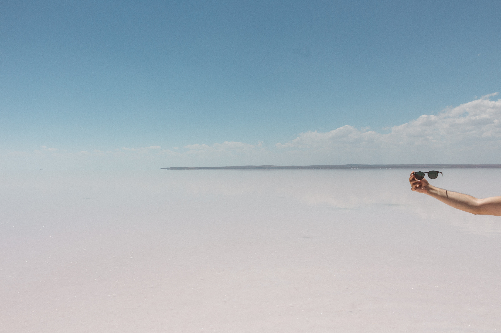

About me
Allow me to introduce myself – I'm John, an avid traveler with an insatiable thirst for exploration. It was during my visit to Rome that my love for travel truly took hold, inspiring me to venture further and embark on this exciting blogging journey.
Rome, with its timeless allure, cast a spell on me. The ancient ruins, like the Colosseum and the Roman Forum, whispered stories of a bygone era. As I wandered through the streets, the city's rich history enveloped me, transporting me back in time. The grandeur of the Vatican, with its breathtaking artwork and ethereal ambiance, left me in awe.

But it wasn't just the iconic landmarks that captivated me. It was the essence of Rome itself—the charming cobblestone alleys, the aroma of freshly baked pizza wafting through the air, and the warmth of the locals who welcomed me with open arms. Rome showed me that travel was about immersing oneself in the heart and soul of a place, not merely ticking off a checklist.
Upon my return, I felt an overwhelming desire to share my experiences, insights, and travel tips with others. I wanted to ignite the same passion for exploration that had been ignited within me. That's when the idea of starting a blog took root.
Through my blog, I aim to take readers on a virtual adventure, transporting them to enchanting destinations and offering a glimpse into the beauty and diversity of our world. I want to go beyond surface-level exploration, delving deep into the local culture, connecting with fellow travelers, and embracing the unexpected.
Expect to find detailed itineraries, insider secrets, and captivating stories that bring destinations to life. From navigating bustling markets in Marrakech to hiking breathtaking trails in the Himalayas, I'll share personal anecdotes and practical advice that will empower and inspire your own travel endeavors.
Whether you're a seasoned globetroller seeking fresh perspectives or a curious soul planning your very first trip, my blog aims to be a valuable resource, providing you with the tools and inspiration to embark on your own transformative journeys.
So, join me as I continue to explore the world, one destination at a time. Together, we'll uncover hidden gems, forge connections with diverse cultures, and cultivate a deep appreciation for the wonders that await us. Let's embark on this remarkable adventure, embracing the transformative power of travel every step of the way.